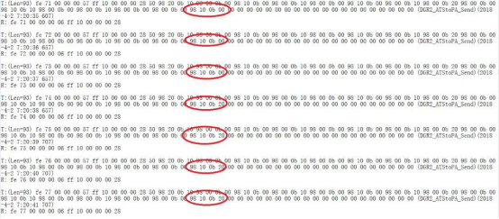

中心报全线各车站PA列车到站广播异常
注意PA、PIS到站信息到站信息及广播的数据传输路径及工作原理
3.1笔记本（预装SCRT）；
下列为一个正常PA报文截取片段，作为典型例子进行解析
T:(Len=93) 83 c5 00 00 00 57 ff 10 00 00 00 28 50 98 00 0a 2098 00 0a 0098 20 0a 0098 00 0a 0098 00 0a 0098 00 0a 0098 10 0a 1098 00 0a 0098 00 0a 0098 20 0a 1098 00 0a 0098 00 0a 0098 10 0a 1098 00 0a 0098 20 0a 00 00 00 00 00 00 00 00 00 00 00 00 00 00 00 00 00 00 00 00 00 (DGR2_ATStoPA_Send)(2018-4-1 22:29:36 357)
R: 83 c5 00 00 00 06 ff 10 00 00 00 28
解析：
4.1取一段正常的报文，从报文的第一个98开始，每四个字符代表一个车站，共15段，代表15个车站：例如第一段报文第一个98 00 0a 20（代表东莞火车站的PA信息），第二个98 00 0a 00（代表茶山站PA信息），以此类推，第十五个98 20 0a 00（代表虎门站PA信息）
4.2其中字符含义：
98：虎门方向（下行广播）；
0a/0b:东莞方向（上行广播）
00：没有车进站(无广播)；
10:列车准备进站的预到站广播；
20列车到站后停稳的到站广播
如：98 10 0a 20 表示该站下行应播放列车预到站广播，上行应播放列车到站广播。
下面将举一个故障典型作为介绍

4.3从报文中可以看出，前三条报文显示虎门站上行没有车进站(无广播)；后四条报文显示上行有列车到站后停稳的到站广播，直接由没有车进站（0b 00）,跳转为到站广播（0b 20）,缺少了预到站广播（0b 10）（注：虎门上行为首发站，所以只播放预到站广播10，不播放到站广播），因此此时虎门上行是没有播放广播的，报文与实际情况对应。
4.4因为PA报文的来源是由ATS将报文发给ISCS后，由ISCS将报文拆分成PIS和PA，因此需将ATS发给ISCS的报文与ISCS发给PA进行核对，如果核对报文一致，那么就可以证明ISCS转发的报文无异常；如报文核对不一致，则有可能是ISCS在拆分报文时出现差错。